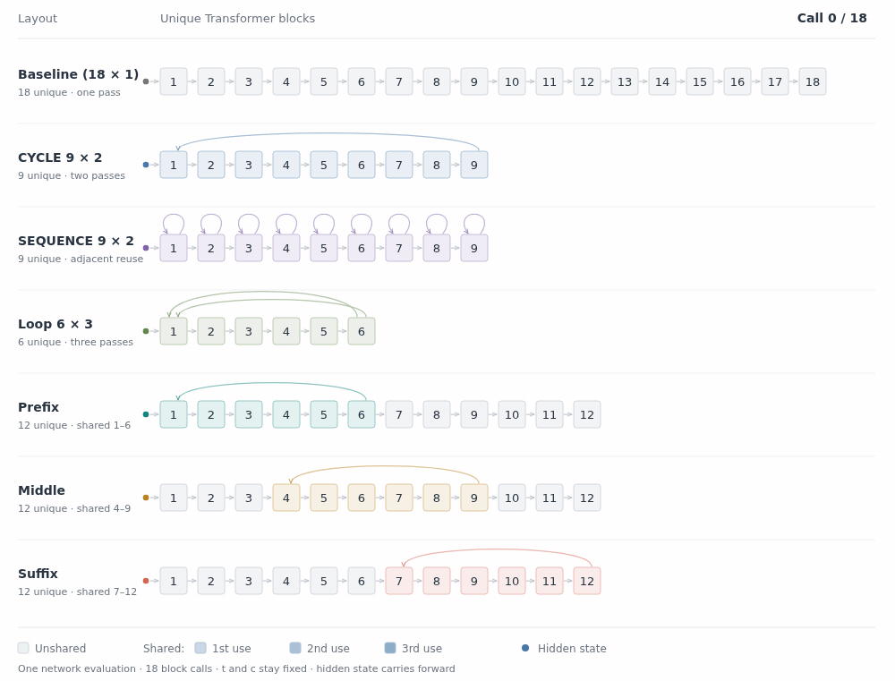

ICASSP 2027 · Submitted
Depth Through Recurrence: Looped Transformers for Flow-Matching TTS
How the amount, order, and placement of weight reuse shape flow-matching TTS at a fixed computation budget.
My research interests include machine learning, generative modeling, and self-supervised learning.


ICASSP 2027 · Submitted
How the amount, order, and placement of weight reuse shape flow-matching TTS at a fixed computation budget.
INTERSPEECH 2026 · Accepted
Jointly refining temporal structure and spectral content with jump diffusion for text-to-speech synthesis.